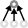

GBrain: Associative Memory by Everyone
This is an experimental system to make a global brain.Feel free to make any modification.
What you can do:
1) Create a new text
2) Link with an existing text
3) Place texts in good positions
 |
Create a child text. |
| Delete the selected text. | |
| Remove parent link. | |
| Open child texts. | |
|  | Close child texts. |
| Locate the parent text. | |
| Locate the first child text. | |
| Locate the next sibling text. | |
| Locate the previous sibling text. | |
| Open a URL in the selected text. | |
| Change color of the selected text. |